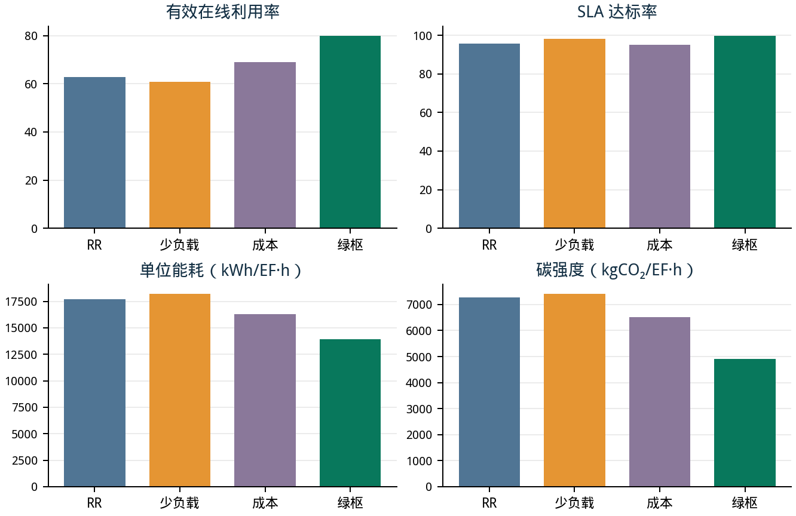

2026 江苏“人工智能+”创新应用大赛
“三苏”创新应用赛道 · AI-JIANGSU-Q36
SuCompute-Opt
行业解决方案白皮书 · 异构算力调度与能效
苏算绿枢（SuCompute-Opt）是面向赛题 AI-JIANGSU-Q36 的调度策略引擎、离线仿真和本地边车。命题单位是江苏省数据集团有限公司，团队盼盼法式小面包，组别为创新组。它给出可复算的策略对比，不代替省一体化算力监测调度平台，也不把合成周的指标写成全省已经实现的运行成绩。
challenge_raw.json 的命题背景写明：平台已形成“省级调度核心 + 13 个市级节点”，纳管 313 个在用数据中心，总算力规模 271.8 EFlops，面向地市开放子门户，并与上海、浙江、安徽互联，作为中国算力网江苏分平台与国家平台贯通。这几项按命题原文引用。
行业方案只使用仓库已经写明出处的公开数。下面的链接和表格抄自 docs/DATA_CONSTRUCTION.md 与 configs/energy.yaml。本次写计划书时没有逐条重新打开政府网页，页面是否仍可访问，标为待核实。
| 量 | 仓库中的取值 | 性质 |
|---|---|---|
| 313 座、271.8 EFlops、1+13、沪浙皖 | 命题原文 | 按 challenge_raw 引用 |
| 13 市 GDP | 2024 年 1–12 月分市表，13 市合计 137291.46 亿元 | 只作小时环境的比例，不是算力普查 |
| 2025-08 110 kV 两部制 | 谷 0.3485 / 平 0.6263 / 峰 0.9682 / 尖 1.1221 元/kWh | 小时环境使用。五分钟引擎的电价是另一条演示曲线 |
| 2022 年电力碳因子 | 华东 0.5617；苏 0.5978；沪 0.5849；浙 0.5153；皖 0.6782 | 年平均因子。五分钟引擎用演示值 0.55，不写成 0.5617 |
| 盐城、南通、连云港风光装机 | 时点分别为 2024-08、2024 年末、2025-05 | 资源禀赋，不是机房绿电合同 |
小时环境把江苏 271.8 EFlops 按 GDP 份额分到 13 市，尾差补在宿迁；三个枢纽各设 12 EFlops。五分钟引擎把 313 座按代码中的座数向量拆开，再乘 271.8/313，枢纽另设上海 26、浙江 20、芜湖 18 EFlops，全网装机 335.8 EFlops。MODEL.md 写明枢纽容量是假设。
solution.md 初稿写过 Transformer / PatchTST。仓库里实际训练并用于五分钟评测的预报器是季节残差时间卷积（backend/models.py 的 Forecaster），不是 PatchTST，也不是 LightGBM。权重说明里的 “seasonal residual TCN” 与此一致。
预报训练集种子 41–43，验证种子 72，评测种子 313。训练从独立的 120 小时轨迹取窗，预报只能看到切点之前 48 小时。MAPE 去掉真实值为 0 的点。下表是 weights/forecast_metrics.json 的验证集，本次 verify_weights.py 只检查权重能否前向，没有重训。
| 验证变量 | MAE | MAPE | 非零样本 |
|---|---|---|---|
| 到达（作业/小时） | 2.086 | 43.96% | 45,179 |
| 绿电占峰值功率 | 0.0204 | 12.54% | 50,688 |
训练 18 个 epoch。到达 MAPE 约 44%，逐小时作业数仍然粗糙。绿电比例的 MAPE 约 12.5%。
PPO 日志 weights/ppo_training.csv 有 160 次更新。违约率目标是 0.5%，图中的红色虚线就是这根线。训练初期有探索性时延违约，末段乘子多次回到 0。这是训练曲线，不是四场景周 SLA。周 SLA 以评测报告为准。
功耗在两套模型里不是同一个系数。五分钟引擎取峰值 10,000 kW/EF，空闲系数 0.32，保活 15 分钟，碳核算乘演示值 0.55 kgCO₂/kWh。小时环境取 1,000 kW/EFlops，并使用分省年平均因子。绝对电量、电费和吨碳都随系数线性放大。同一系数下比策略才有意义，不能换成全省能源平衡。
数字孪生沙盘读取 frontend_demo_data 的静态回放，页面在 shared-workbench/frontend/sucompute.html。地图是 13 个设区市加上海、浙江、芜湖。它回放仿真，不是省平台的实时监视画面。
本地边车是无状态的 FastAPI：python -m uvicorn server:app。指令解析是确定性文法。仓库预设四句：迎峰度夏把碳排权重调到 0.6、注入南京 30% 算力故障、优先绿电消纳、解释调度。带百分数的“宕机”按容量损失解析，不带百分数才是整节点离线。调权重或注入故障后按同一输入重算。
账本来自 PR #19。每条任务记录有效 EF·h、分摊电费、碳排、相对“同等电量全购电网”的减排、SLA，以及去掉展示字段后的 SHA-256。绿电只抵扣碳排，不抵扣电费。电价用 world.py 的 weather() 演示曲线，碳因子用 GRID=0.55。代码注释写明不要把 0.55 说成公告里的 0.5617。
下表是本次 python benchmarks/run_benchmark.py --seed 313 --workers 2 写出的四场景等权均值，保留报告原文的四舍五入。对照还包括消融，完整六行在佐证材料里。有效在线利用率的分母含 15 分钟保活。
| 策略 | 利用率 | SLA | kWh/EF·h | PUE | 绿电 | kgCO₂/EF·h |
|---|---|---|---|---|---|---|
| RR-Local | 62.72% | 95.72% | 17705.0 | 1.3760 | 25.26% | 7277.5 |
| Least-Loaded | 60.92% | 98.13% | 18181.2 | 1.3497 | 25.98% | 7401.3 |
| Cost-First | 68.98% | 94.97% | 16271.5 | 1.3093 | 27.26% | 6509.9 |
| SuCompute | 80.01% | 99.83% | 13945.7 | 1.2957 | 35.95% | 4911.9 |
RR-Local 是轮询并保留就近溢出；Least-Loaded 选负载最低池；Cost-First 选最低电价。三者与 SuCompute 接受同一批任务和故障。

由本次 results_summary.json 绘制。横轴依次为 RR-Local、Least-Loaded、Cost-First、SuCompute。脚本原图见佐证材料。
下表归纳 research.md 对公开产品定位的整理。本队没有做联合评测，没有这些产品的采购记录或客户名单，也不引用市占率。
| 产品 | 公开定位 | 和本赛题并排时看不到的部分 |
|---|---|---|
| Run:ai | GPU 切分与集群配额 | 省级多品牌芯片当量、绿电和跨省碳凭证 |
| Cast AI | 多云成本与竞价实例 | 国产智算卡、城域时延圈、PUE 与绿电移峰 |
| 阿里云灵骏 | 自有云万卡与故障恢复 | 厂商中立的省级跨运营主体调度 |
| 华为云昇腾 | 昇腾栈、Volcano、液冷 | 全省多厂商混部的同一套配额 |
| 无问芯穹 | 多品牌芯片上的模型服务 | 分时电价、苏北绿电和跨主体结算 |
| 国家超算互联网 | 全国算力门户与供需对接 | 细到任务槽的多目标调度引擎 |
苏算绿枢放在这一列里，只表示它的代码边界：不绑定单一芯片厂商，策略以边车形式输出，仿真里同时看时延、电价、碳和故障。它还没有接到省平台，因此不是上述产品的替代部署。
仓库没有江苏省数据中心用电统计，也没有可调度电量占比。电费不能从仿真周的绝对 kWh 直接除出来：五分钟引擎的 10,000 kW/EF 会把电量线性放大。下面只做一件事：把本次相对 RR-Local 的单位能耗降幅，乘到三档假设年用电上。
公式：预估年电费变化 = E × 0.6263 元/kWh × 21.23%。21.23% 是本次报告相对 RR-Local 印出的单位能耗降幅。0.6263 是小时环境引用的 2025 年 8 月 110 kV 两部制平段电价，不是五分钟引擎的演示电价，也不是企业到户账单。三档 E 都是假设，不是统计公报。
| 情景 | 假设年用电 E | 预估年电费变化（万元） |
|---|---|---|
| 低 | 0.5 亿 kWh | 665 |
| 基准 | 2.0 亿 kWh | 2,659 |
| 高 | 8.0 亿 kWh | 10,637 |
本次复现的精确降幅是 21.232856%（13945.7273 / 17705.0057）。金额表用报告印出的 21.23%，电价用 0.6263 元/kWh。 未使用碳价，也没有把碳强度降幅再乘一次电费。
社会侧只复述仿真内已经分开计量的两项。四场景等权 SLA：SuCompute 99.83%，RR-Local 95.72%。绿电占设施用电：35.95% 对 25.26%。后者是沙盘里就地消纳的份额，不是全省可再生能源利用率，也不能换成弃风弃光的实物电量。就业人数、签约客户和财政贡献，仓库里没有，这里不估。
没有签约客户，也没有报价。若命题方组织试点，费用按部署联调、接口适配和年度运维分列，价格另行核定。本计划书不写单价，避免把设想写成合同。
阶段 1 依赖省平台或地市子门户提供只读指标。仓库没有这份接口说明书，字段映射写在佐证材料的部署章，未对接的部分标为待联调。
仓库没有编制和职务表。下面按已合并的工作包划分，不表示对外头衔。
| 工作包 | 仓库中的位置 | 状态 |
|---|---|---|
| 小时级 Gym 与数据口径 | js_computesim/、docs/DATA_CONSTRUCTION.md | 可复跑 random / greedy |
| 五分钟引擎、卷积、MILP、PPO | backend/、weights/、benchmarks/ | 权重已校验，周评测已复跑 |
| Copilot 与碳足迹账本 | backend/copilot.py，PR #19 | 默认模板；外部模型本次未调用 |
| 1+13 回放沙盘 | frontend_demo_data/、sucompute.html | 静态回放，不是省平台实况 |
| 计划书与佐证 | deliverables/，YOU-284 | 本文件 |
赛程以仓库 README 为准：初赛材料在 2026-11-30 截止，12 月 1–3 日线上评审，12 月中旬路演。技术路线不把这些日期写成系统上线日。阶段 1 以后的试点没有开始日期，因为还没有联调环境。
阅读顺序按“命题原文 → 口径 → 代码 → 本次复现”排列。政府网页的可访问性本次未复核。